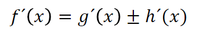
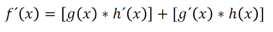
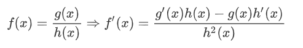
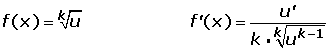

Regla de Suma y Diferencia de Funciones
La regla para adicionar o sustraer funciones es, sí f(x) = g(x) +/- h(x); se suman o se sustraen las derivadas de cada funcion dependiendo del signo.

Regla del Producto de Funciones
La regla para multiplicar funciones es, sí f(x) = g(x) * h(x); se multiplica la primera función por la derivada de la segunda, y se suma el producto de la segunda función por la derivada de la primera.

Regla de la División
La regla para dividir el cociente de dos funciones es, la derivada de la dividendo por el divisor menos el dividendo por la derivada del divisor y dividido todo ello entre el divisor al cuadrado.

Regla de la Raíz (General)
La regla para encontrar la raíz de dos funciones es, la derivada del radicando partida por la "k" veces la raíz enésima de la función radicando elevada a "k" menos uno.

Regla de la Raíz Cuadrada
La regla para encontrar la raíz cuadrada de dos funciones es, la derivada del radicando partida por el duplo de la raíz. Se tiene en cuenta la fórmula anterior pero se ve más simplificada.

Regla de la Cadena
La regla de la cadena de dos funciones es, definir primeramente la parte externa(todo lo que esta fuera del paréntesis, es decir toda la función) y la parte interna de la función(lo que se encuentra dentro de los paréntesis, se podria decir la función secundaria), se multiplica la derivada interna y externa y se obtiene la regla de la cadena.